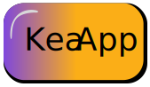

I Tema 4 handler om brugeroplevelsen. Vi skal især tag hensyn til brugeren og de funktioner vi udvikler og designer. Der skal vi hele tiden have brugeroplevelsen for kunden bag øret. Jeg lavede en masse forskellige test på diverse elementer. Bland andet et Skema jeg lavede i uge 3, hvor jeg bl.a. fandt ud at et af de knappede jeg havde lavet ikke var nem at gennemskue hvad gjorde. Da det var den samme design som menuknappen. Dermed skal det ændres hvis produktet skulle forsætte. Jeg brugte Adobe XD i løbet af Teamet til at designe de forskellige design forslag og produkter. Der var en masse planlægning i den produktions ugerne. Især opstilling af kamera og test.
